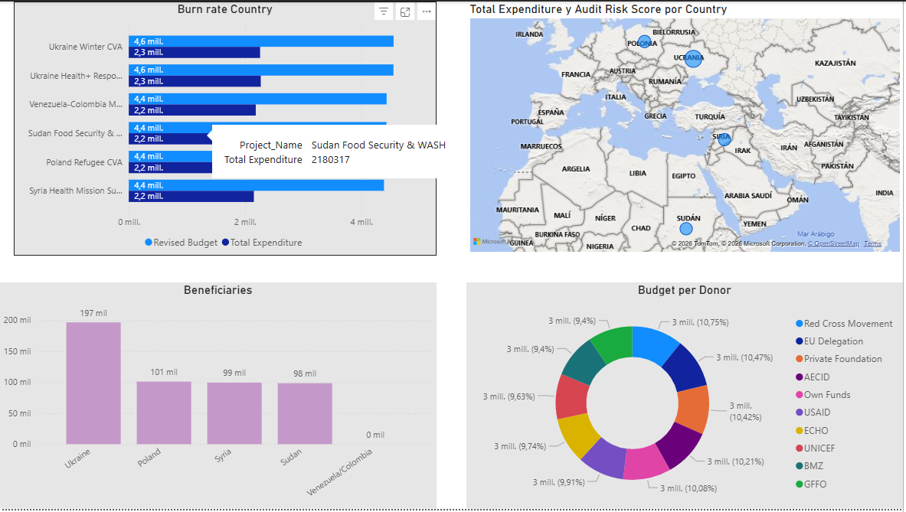

Dashboard demo
Humanitarian Finance Dashboard
Synthetic donor finance, compliance and operational reporting dashboard.
Open dashboardEvidence & Case Studies
A concise set of portfolio evidence linking humanitarian finance, operations, CVA and analytics work to practical reviewable outputs.
Dashboard demo
Synthetic donor finance, compliance and operational reporting dashboard.
Open dashboardPower BI
Power BI dashboard using synthetic humanitarian datasets inspired by finance, CVA and donor environments.

CVA operations
Branch support, volunteer training and CVA implementation examples from Poland and Ukraine contexts.
Review field evidenceBudget management
Master budget consolidation, forecasting and donor compliance examples.
Review experience summaryExamples of complex assignments combining finance, programme delivery, branch coordination, donor accountability and field-level implementation.
Ukraine response
Supported a consolidated multi-donor master budget of approximately €11M over three years, with €7M concentrated in the first two years. The structure integrated operational components such as seasonal CVA, trainings and branch support into one financial management framework.
CVA / Poland
Supported a €1.6M CVA operation for 300 vulnerable families, prioritising older couples with chronic diseases, single mothers with two or more children and people with chronic health conditions.
Sudan / EU food security
Managed programme follow-up, EU reporting, procurement processes, audits and closure of a multi-sector operation in Red Sea State combining food security, livelihoods, WASH, gender and community capacity building.
The public portfolio repository remains available for technical inspection, including dashboard documentation, synthetic datasets, Power BI notes and project roadmap materials.
View Portfolio Repository